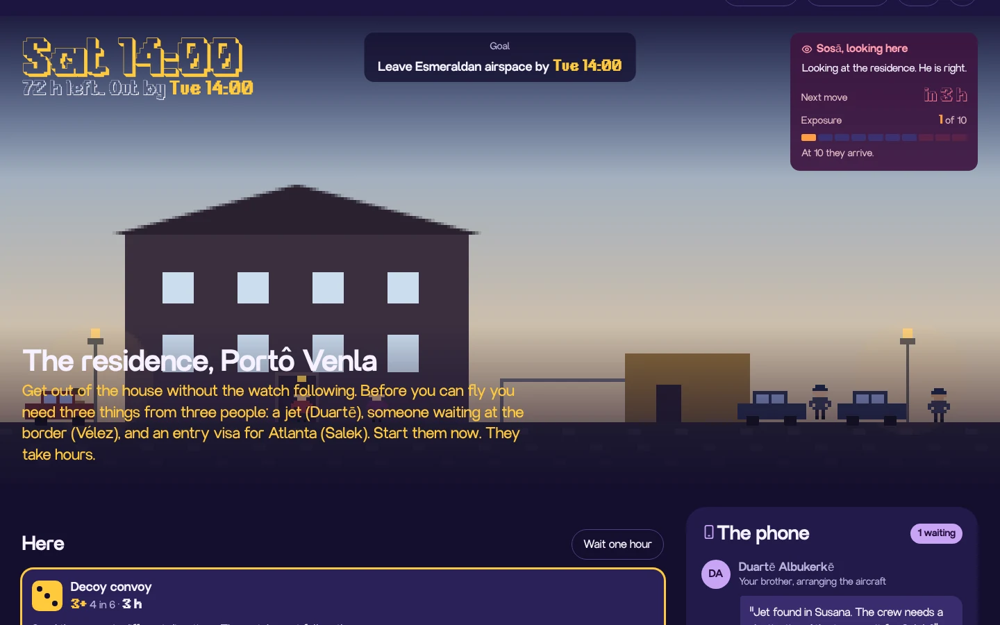
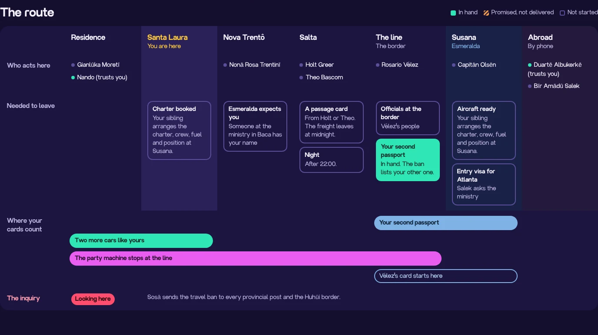
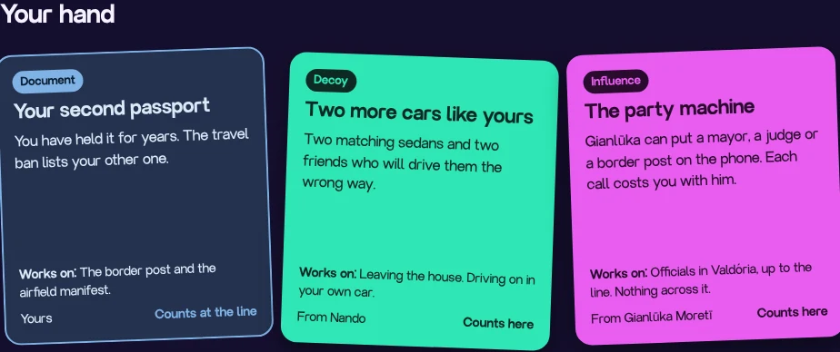
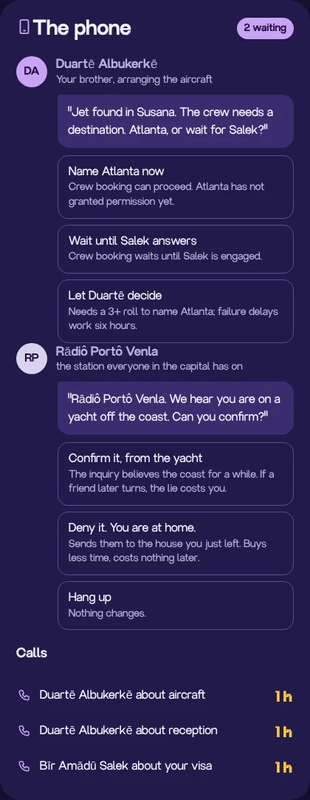
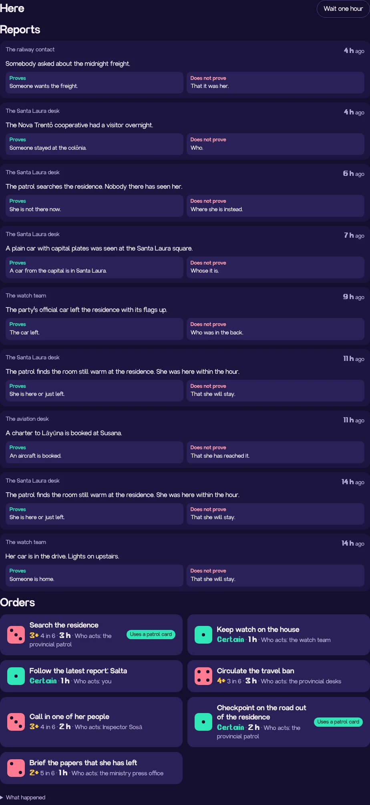
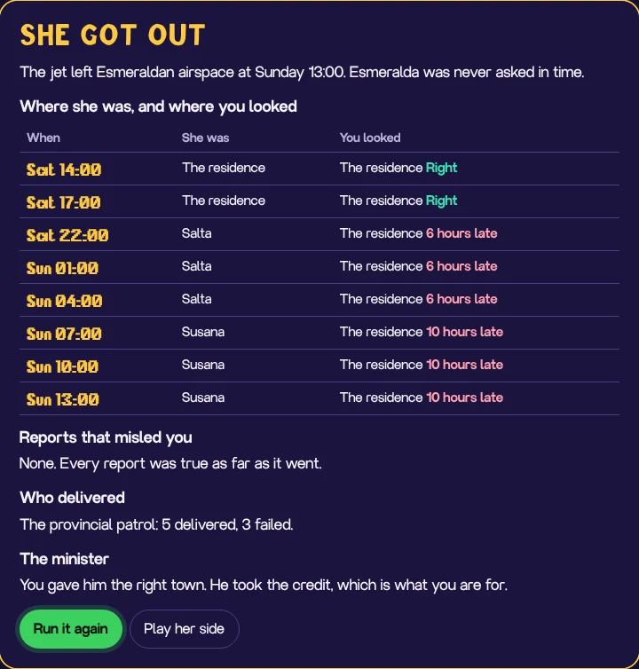
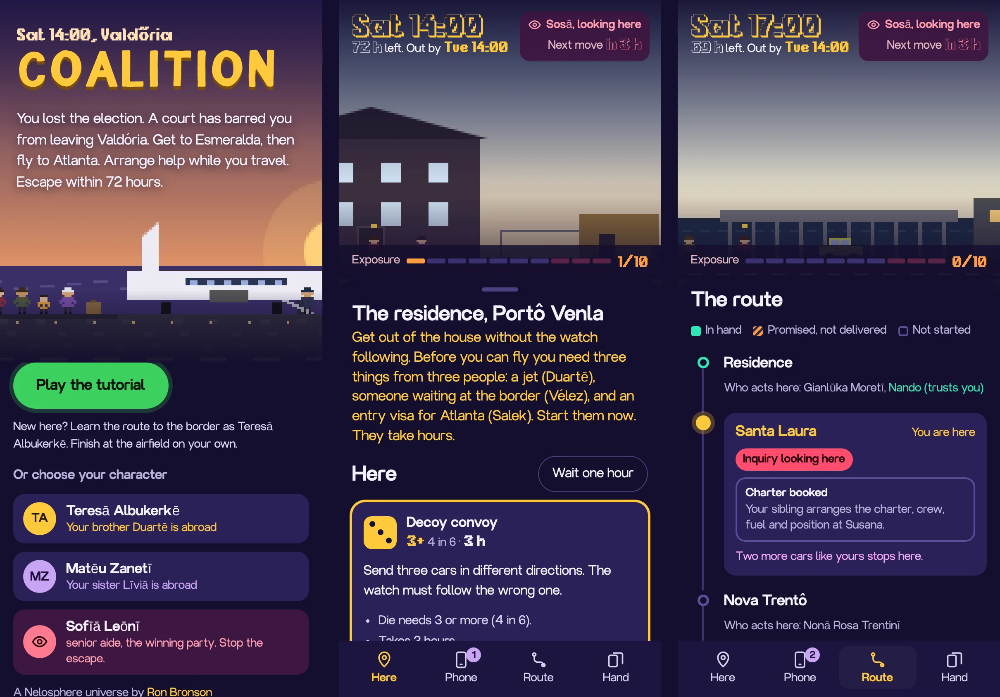

Coalition
An escape game that fits in one HTML file. You lost an election in a country I made up, a court has barred you from leaving, and you have 72 hours to reach the border and a jet. Everyone who can help you is somewhere else, on the phone. Or you play the other side and try to stop you.

The idea
Leaving a country under pressure is a coordination problem, even for someone with money and friends. One person finds the jet. Another asks for the landing visa. A third carries the document, and a fourth tells the border post your name. None of them can do the others’ work. The unit of the game is the handoff: one person’s promise has to become something the next person can act on. I started from that observation and generalized it into a fiction. Nothing in the game describes a real person or a real escape.
It’s set in Valdória, a South American state in my Nelosphere universe, with Esmeralda across the mountains as the second Nelosphere country on the continent. The destination is Atlanta, in the African bloc of the same world. The names, the austral, and the three or four spoken words come from the world bible in the kels repo. Esmeralda, its capital Baca, and its largest city Susana were written for this game and added back to the canon.
How a run works
Six stops: the residence, a provincial town, a farming colony, a rail town, the border, and the airfield. Each stop is two problems at once. Here is the thing in front of you, solved with one of a few approaches. The phone is everything your allies are doing elsewhere, and it keeps moving while you travel. Every approach shows the die it needs, the hours it costs, and the card that helps. You pick, you commit, the die rolls, and the scene plays the result.
Cards are the part I spent the most time on. A card is specific help from a specific person: your driver’s two decoy sedans, the party chief’s phone calls, a farm truck, a banker’s name, your second passport. Each card says where it counts. The party machine works at every Valdórian post and means nothing across the line. The passport counts at the border and the airfield manifest and nowhere before. The banker’s name works everywhere, because money is never the scarce thing in this game. The question is always whether the person in front of you takes it.

Promises come due. The banker wants the family accounts signed over the night you reach the colony. The aide in Baca wants you to say, on the record, that you arrive as a guest and not a government. Refusing either has a price you can see coming. Things come at you too. A radio station asks you to confirm a story that you’re on a yacht. A brakeman warns of men at the yard gate. The inspector calls you himself. The ending is written from what you did, who talked, and who is on the warrant.


The other side
You can also play Sofīā Leōnī, the aide the winning party sends to run the inquiry. The computer plays the candidate on a hidden run. You never see where she is. You see reports, each with a line for what it proves and a line for what it doesn’t. A red sedan took the south road. That proves a car went south, not that she was in it. You send orders with a named actor, a die, and a cost in hours, and you make requests across the border that take ten hours to answer. Your ministry commands nothing in Esmeralda until Esmeralda agrees to help. The debrief lays her real route next to where you looked, hour by hour, and names the report that misled you.


Phone first
Most people will play it on a phone, so the phone layout is the primary one. The scene fills the top of the screen with the clock, the inquiry, and the exposure line over it, and one panel shows at a time: Here, Phone, Route, Hand. The route becomes a vertical rail of stops. On a wide window the same parts spread out and the route becomes the full board above. Served over HTTPS it installs to a home screen and runs offline after the first visit, and a run saves after every move so you can pick it up later. The whole thing also still opens from a file on disk.

The tutorial
A guided first run plays on a fixed seed with a scripted die and scripted inquiry moves, so every step lands. The coach allows exactly one action per step and dims the rest, which is enforced in the interface and never in the rules. It walks you from the house to the border, then hands you the airfield live. The last stop is hours of real waiting on other people, and a script would misrepresent it. A Node script replays the whole path against the real rules, so a balance change that breaks a step fails before it ships.
How it’s built
- One file
- A Python build inlines everything into
index.html: the CSS, the pinned p5.js 1.9.4, the data tables, the simulation, the audio, the renderer, and the UI. Every font ships as a base64 face. The page makes no network requests. The build also writes the web manifest and a service worker with a build stamp. - Rules
- A pure simulation with no DOM and no rendering, loadable in Node. It returns event lists; the interface narrates and animates them after the fact, so what happened is settled before anything moves on screen. The die’s state lives on the run, which is what makes a saved run resume with the roll it would have had.
- Scene
- p5.js draws every stop on a 320 by 150 pixel buffer and scales it. People in the scene are hotspots. The title still and the runway photo on the start screen are drawn by the same renderer, so there are no image assets.
- Sound
- Web Audio only. The effects are synthesized, and the theme is a sequenced synthwave track in D minor that the Start button unlocks, since browsers need a gesture before any sound.
- Type
- Licensed faces I own, embedded with their license headers: Little Grandad Fat for the title, GC North Sans for reading, Overbit for the clock and the numbers.
- Measurement
- A harness plays hundreds of seeded runs with a simple policy and reports the win rate, how runs end, hours per stop, and how often each card does anything. Four of nine cards did nothing in a win before the reach rule; all nine do now.
- Records
- A directed agent build. I set the design, the fiction, and the rules of the copy; agents wrote most of the code. Each run ends with a closedtab after-action record in the repo.
What changed after the first build
The first version was too fast and too easy, and the cards made no sense. They were small bonuses to a die roll, and four of them did nothing at all. The fix was to make a card into authority with a reach. The party machine stops at the line, and a brakeman’s crate works in one rail yard on one night. The good exits now wait on the phone, so you can’t climb to the border until someone in Baca has your name. The second passport was first written as a document a clerk issued during the run. I cut that. You’ve held it for years, and the game is about getting out before you’re stopped.
The content architecture that came out of this is published on its own as PBBG Content Schema. It separates interface copy, narrative, and game definitions, so an agent can’t change a die roll while fixing a sentence.
Repo: quarterback/escape-game.